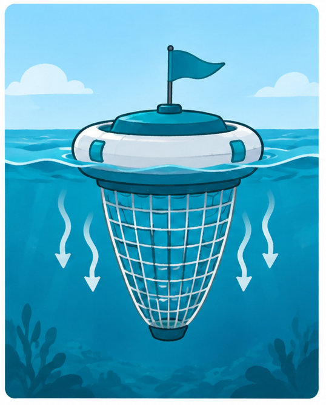
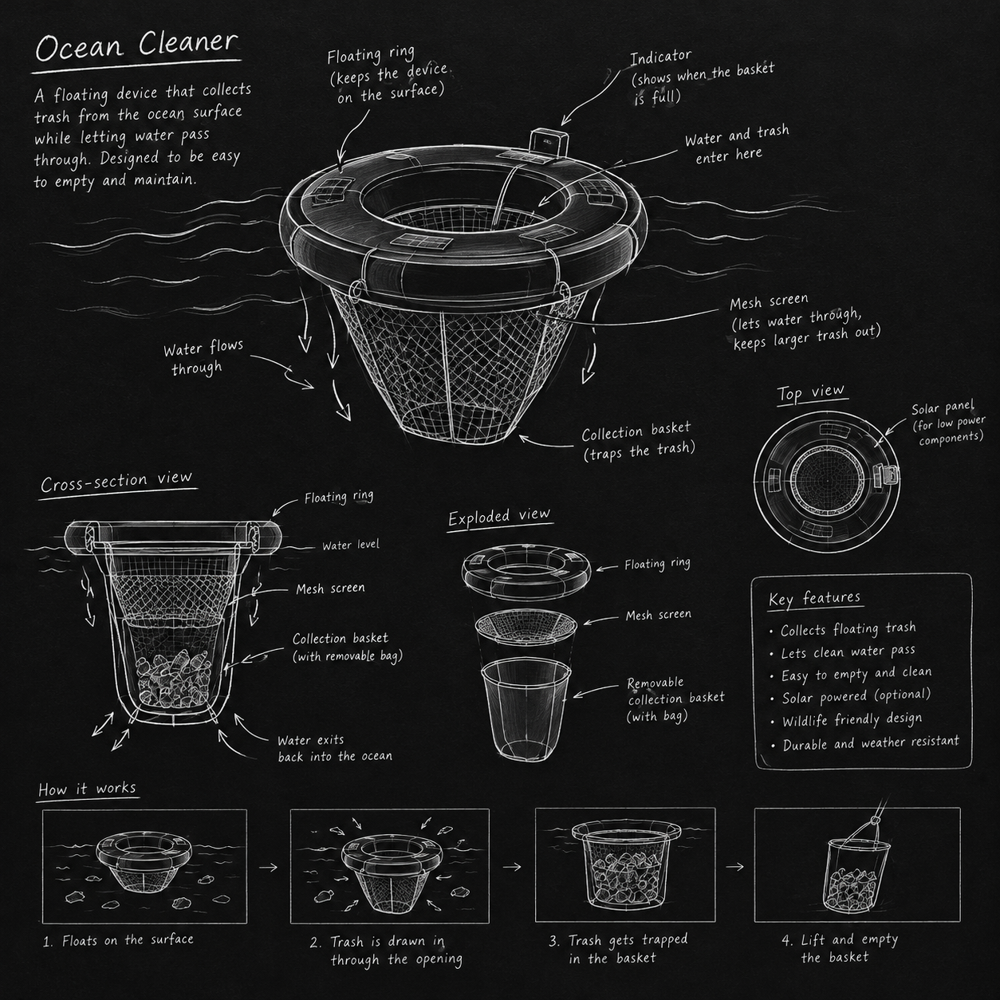
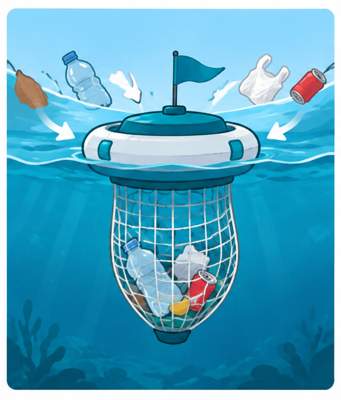
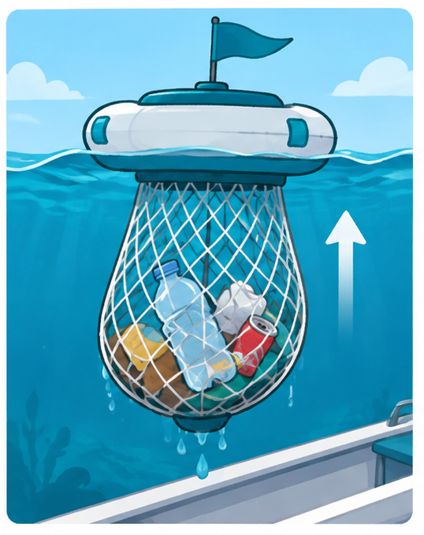

1. Floating Design
The top part floats on the water and keeps the device in position.

MY INNOVATION
Ocean polution is a serious problem that affects marine animals and their habitats. Thats why I had my idea, which is to create a floating device that collects rubbish from the ocean surface before it spreads.

A simple idea to help reduce ocean pollution.
The top part floats on the water and keeps the device in position.

A net hangs underneath the floating part and catches rubbish from the water

water can pass through the vet while larger pieces of rubbish stay trapped inside.

This device could help reduce floating rubbish, protect marine animals, and keep ocean environments cleaner.